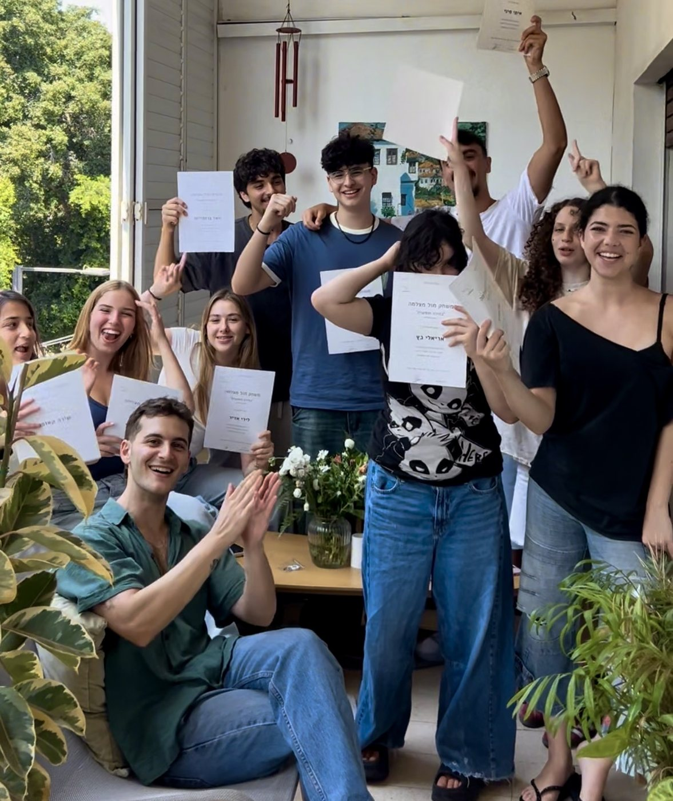

המסלולים
והשיעורים
כל המסלולים עובדים בשיטת "בחירה חופשית" — אותו עיקרון, מותאם לכל שלב בדרך. מהקורס השנתי המלא ועד סדנה אישית והכנה ממוקדת לאודישן.
הקורס השנתי
לעמוד הקורס- פורמט
- התהליך המלא · אוק'–יוני · פעם בשבוע
- קבוצות
- נוער 14–17 | בוגרים 18+
- פתיחה
- מחזור חדש נפתח אחרי החגים
- מיקום
- הסטודיו · שד' ירושלים 67, יפו
חדר כושר לשחקנים. תהליך מקיף ועשיר בעבודה מעשית — תקבלו כלים כדי להבין על מה הסצנה באמת, ותרגילים שעוזרים להגיע לנוכחות מלאה מול המצלמה. מספיק זמן לנסות, לטעות, להצליח ולבסס שפה אישית — כדי להפסיק לנחש ולהתחיל לבחור.
- השיטה מהיסוד — גבולות וחופש, לאורך התהליך המלא
- עבודה מתמשכת מול מצלמה
- סימולציות אודישן מצולמות, קולבאק ומאצ'ינג
- מפגשי אורח עם אנשי מקצוע מהתעשייה — במאי, מלהקת, שחקני אורח
- כניסה לקהילת "בחירה חופשית"
המקומות מוגבלים, אז אם זה מדבר אליכם — תכתבו לי מוקדם.
צרו קשר לפרטיםסדנת
"בחירה חופשית"
לעמוד הסדנה
- פורמט
- 8 מפגשים · פעם בשבוע
- בוגרים 18+
- 3 שעות · שעות ערב
- נוער 14–17
- 2 שעות 45 דק' · אחה"צ
- מיקום
- הסטודיו · שד' ירושלים 67, יפו
8 מפגשים | טכניקה, ניתוח סצנות, עבודה מול מצלמה, הכנה לאודישנים וקהילה שמלווה אתכם. סדנה לשחקנים שרוצים לקחת את זה צעד קדימה — עם שתי קבוצות גיל: נוער 14–17 ובוגרים 18+.
- למידת שיטת "בחירה חופשית" מהיסוד
- ניתוח סצנות וסימולציות אודישן מצולמות
- קולבאק ומאצ'ינג
- ללמוד איך להביא את האמת שלכם לתוך סצנה — ולהגיע לטייק ייחודי שהוא שלכם
- כניסה לקהילת "בחירה חופשית"
תאריכי הפתיחה הקרובים יעודכנו כאן ממש בקרוב — בינתיים פשוט תכתבו לי.
צרו קשר לפרטיםסדנה אישית
אחד על אחד
לעמוד הסדנה
- פורמט
- 5 מפגשים · שעה · פעם בשבוע
- מיקום
- הסטודיו · שד' ירושלים 67, יפו
- תיאום
- לפי תיאום אישי
תהליך אישי לחלוטין — בלי קבוצה. מתאים במיוחד למי שרוצה לצבור ביטחון לפני שמצטרפים לקבוצה, למי שבא מתיאטרון ורוצה לדייק את עצמו מול מצלמה, או למי שיש לו מטרה ספציפית.
לפני המפגש הראשון אתם כותבים לי את החזון שלכם, את החסמים ואת המטרות — ועל הבסיס הזה אנחנו בונים יחד תוכנית עבודה מותאמת. דוגמאות לנושאים:
- ביטחון מול מצלמה
- כלים להתמודדות עם סצנה
- מעבר מתיאטרון למדיום המצולם ולעולם האודישנים
יש לכם אודישן מצולם לשלוח, או הזמינו אתכם לאודישן פרונטלי? מגיעים עם הסצנה — וביחד עובדים על ניתוח הסצנה, מזקקים את הטייק, ואם צריך מצלמים את האודישן.
מטרה אחת: להגיע לאודישן כשאתם יודעים בדיוק מה אתם עושים ולמה.
לקביעת פגישההדרך
לא נגמרת
בסדנה.
כל מי שנרשם לאחד מהמסלולים נכנס לקהילת "בחירה חופשית" — המשך הדרך, גם אחרי שהסדנה נגמרת.
לדעת ראשונים
על פתיחת סדנאות חדשות — לפני כולם.
הטבות בלעדיות
לחברי הקהילה בלבד.
מפגשי אורח
עם אנשי מקצוע מהתעשייה — מלהקות, עוזרות במאי, שחקנים ועוד.
רשת תמיכה
שחקנים מכל הגילאים והרמות שעברו את התהליך.

שדרות ירושלים 67, יפו
ליד תחנת רכבת קלה בלומפילד
חניון חינמי, 7 דקות הליכה
מה ששואלים אותי לפני שנרשמים
ואם השאלה שלכם לא כאן — פשוט תכתבו לי, אני עונה בעצמי.
צריך ניסיון קודם במשחק?
כמה אנשים יש בקבוצה?
מה ההבדל בין הקורס השנתי לסדנה של 8 מפגשים?
מה צריך להביא למפגש?
מה קורה אם פספסתי מפגש?
אני מקבל/ת את הסרטונים שצילמנו?
מתי נפתח המחזור הבא?
מה קורה אחרי שהסדנה נגמרת?
איפה הסטודיו ואיך מגיעים?
לא בטוחים
מה מתאים?
כתבו לי כמה מילים על איפה אתם נמצאים — ואכוון אתכם למסלול הנכון.
דברו איתי בוואטסאפ